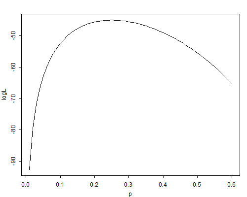

This is a brief summary of some of the key results we need from likelihood theory.
Let \( Y_1, \ldots, Y_n \) be \( n \) independent random variables (r.v.’s) with probability density functions (pdf) \( f_i(y_i;\boldsymbol{\theta}) \) depending on a vector-valued parameter \( \boldsymbol{\theta} \).
The joint density of \( n \) independent observations \( \boldsymbol{y} = (y_1, \ldots, y_n)' \) is
\[\tag{A.1}f(\boldsymbol{y};\boldsymbol{\theta}) = \prod_{i=1}^n f_i(y_i; \boldsymbol{\theta}) = \mbox{L}(\boldsymbol{\theta};\boldsymbol{y}).\]This expression, viewed as a function of the unknown parameter \( \boldsymbol{\theta} \) given the data \( \boldsymbol{y} \), is called the likelihood function.
Often we work with the natural logarithm of the likelihood function, the so-called log-likelihood function:
\[\tag{A.2}\log\mbox{L}(\boldsymbol{\theta};\boldsymbol{y}) = \sum_{i=1}^n \log f_i(y_i; \boldsymbol{\theta}).\]A sensible way to estimate the parameter \( \boldsymbol{\theta} \) given the data \( \boldsymbol{y} \) is to maximize the likelihood (or equivalently the log-likelihood) function, choosing the parameter value that makes the data actually observed as likely as possible. Formally, we define the maximum-likelihood estimator (mle) as the value \( \hat{\boldsymbol{\theta}} \) such that
\[\tag{A.3}\log\mbox{L}(\hat{\boldsymbol{\theta}};\boldsymbol{y}) \ge \log\mbox{L}(\boldsymbol{\theta};\boldsymbol{y}) \mbox{ for all } \boldsymbol{\theta}.\] Example: The Log-Likelihood for the Geometric Distribution. Consider a series of independent Bernoulli trials with common probability of success \( \pi \). The distribution of the number of failures \( Y_i \) before the first success has pdf \[\tag{A.4}\mbox{Pr}(Y_i=y_i) = (1-\pi)^{y_i} \pi.\]for \( y_i = 0, 1, \ldots \). Direct calculation shows that \( \mbox{E}(Y_i) = (1-\pi)/\pi \).
The log-likelihood function based on \( n \) observations \( \boldsymbol{y} \) can be written as
\[\tag{A.5}\begin{eqnarray}\log\mbox{L}(\pi;\boldsymbol{y})& = &\sum_{i=1}^n\{ y_i\log(1-\pi)+\log\pi\} \ & = &n (\bar{y}\log(1-\pi) + \log\pi),\end{eqnarray}\]where \( \bar{y}=\sum y_i/n \) is the sample mean. The fact that the log-likelihood depends on the observations only through the sample mean shows that \( \bar{y} \) is a sufficient statistic for the unknown probability \( \pi \).
Figure A.1 The Geometric Log-Likelihood for \( n=20 \) and \( \bar{y}=3 \)
Figure A.1 shows the log-likelihood function for a sample of \( n=20 \) observations from a geometric distribution when the observed sample mean is \( \bar{y}=3. \Box \)
The first derivative of the log-likelihood function is called Fisher’s score function, and is denoted by
\[\tag{A.6}\boldsymbol{u}(\boldsymbol{\theta}) = \frac{ \partial\log\mbox{L}(\boldsymbol{\theta};\boldsymbol{y})}{\partial\boldsymbol{\theta}}.\]Note that the score is a vector of first partial derivatives, one for each element of \( \boldsymbol{\theta} \).
If the log-likelihood is concave, one can find the maximum likelihood estimator by setting the score to zero, i.e. by solving the system of equations:
\[\tag{A.7}\boldsymbol{u}(\hat{\boldsymbol{\theta}}) = \boldsymbol{0}.\] Example: The Score Function for the Geometric Distribution. The score function for \( n \) observations from a geometric distribution is \[\tag{A.8}u(\pi) = \frac{\mbox{d}\log\mbox{L}}{\mbox{d}\pi} = n (\frac{1}{\pi}-\frac{\bar{y}}{1-\pi}).\]Setting this equation to zero and solving for \( \pi \) leads to the maximum likelihood estimator
\[\tag{A.9}\hat{\pi} = \frac{1}{1+\bar{y}}.\]Note that the m.l.e. of the probability of success is the reciprocal of the number of trials. This result is intuitively reasonable: the longer it takes to get a success, the lower our estimate of the probability of success would be.
Suppose now that in a sample of \( n=20 \) observations we have obtained a sample mean of \( \bar{y}=3 \). The m.l.e. of the probability of success would be \( \hat{\pi} = 1/(1+3) = 0.25 \), and it should be clear from Figure A.1 that this value maximizes the log-likelihood.
The score is a random vector with some interesting statistical properties. In particular, the score evaluated at the true parameter value \( \theta \) has mean zero
\[ \mbox{E}[\boldsymbol{u}(\boldsymbol{\theta})] = \boldsymbol{0} \]and variance-covariance matrix given by the information matrix:
\[\tag{A.10}\mbox{var}[\boldsymbol{u}(\boldsymbol{\theta})] = \mbox{E}[\boldsymbol{u}(\boldsymbol{\theta})\boldsymbol{u}'(\boldsymbol{\theta})] = \boldsymbol{I}(\boldsymbol{\theta}).\]Under mild regularity conditions, the information matrix can also be obtained as minus the expected value of the second derivatives of the log-likelihood:
\[\tag{A.11}\boldsymbol{I}(\boldsymbol{\theta}) = - \mbox{E} [\frac{\partial^2\log\mbox{L}(\boldsymbol{\theta})} {\partial\boldsymbol{\theta} \partial\boldsymbol{\theta}'} ].\]The matrix of negative observed second derivatives is sometimes called the observed information matrix.
Note that the second derivative indicates the extent to which the log-likelihood function is peaked rather than flat. This makes the interpretation in terms of information intuitively reasonable.
Example: Information for the Geometric Distribution. Differentiating the score we find the observed information to be \[\tag{A.12}-\frac{\mbox{d}^2\log\mbox{L}}{\mbox{d}\pi^2} = -\frac{\mbox{d} u}{\mbox{d} \pi} = n ( \frac{1}{\pi^2} + \frac{\bar{y}}{(1-\pi)^2}).\]To find the expected information we use the fact that the expected value of the sample mean \( \bar{y} \) is the population mean \( (1-\pi)/\pi \), to obtain (after some simplification)
\[\tag{A.13}\mbox{I}(\pi )= \frac {n} {\pi^2(1-\pi)}.\]Note that the information increases with the sample size \( n \) and varies with \( \pi \), increasing as \( \pi \) moves away from \( \frac{2}{3} \) towards 0 or 1.
In a sample of size \( n=20 \), if the true value of the parameter was \( \pi=0.15 \) the expected information would be \( I(0.15)=1045.8 \). If the sample mean turned out to be \( \bar{y}=3 \), the observed information would be \( 971.9 \). Of course, we don’t know the true value of \( \pi \). Substituting the mle \( \hat{\pi}=0.25 \), we estimate the expected and observed information as 426.7. \( \Box \)
Calculation of the mle often requires iterative procedures. Consider expanding the score function evaluated at the mle \( \hat{\boldsymbol{\theta}} \) around a trial value \( \boldsymbol{\theta}_0 \) using a first order Taylor series, so that
\[\tag{A.14}\boldsymbol{u}(\hat{\boldsymbol{\theta}}) \approx \boldsymbol{u}(\boldsymbol{\theta}_0) + \frac{\partial\boldsymbol{u}(\boldsymbol{\theta})}{\partial\boldsymbol{\theta}}(\hat{\boldsymbol{\theta}}-\boldsymbol{\theta}_0).\]Let \( \boldsymbol{H} \) denote the Hessian or matrix of second derivatives of the log-likelihood function
\[\tag{A.15}\boldsymbol{H}(\boldsymbol{\theta}) = \frac{\partial^2\log\mbox{L}}{\partial\boldsymbol{\theta} \partial\boldsymbol{\theta}'} = \frac{\partial\boldsymbol{u}(\boldsymbol{\theta})}{\partial\boldsymbol{\theta}}.\]Setting the left-hand-size of Equation A.14 to zero and solving for \( \hat{\boldsymbol{\theta}} \) gives the first-order approximation
\[\tag{A.16}\hat{\boldsymbol{\theta}} = \boldsymbol{\theta}_0 - \boldsymbol{H}^{-1}(\boldsymbol{\theta}_0) \boldsymbol{u}(\boldsymbol{\theta}_0).\]This result provides the basis for an iterative approach for computing the mle known as the Newton-Raphson technique. Given a trial value, we use Equation A.16 to obtain an improved estimate and repeat the process until differences between successive estimates are sufficiently close to zero. (Or until the elements of the vector of first derivatives are sufficiently close to zero.) This procedure tends to converge quickly if the log-likelihood is well-behaved (close to quadratic) in a neighborhood of the maximum and if the starting value is reasonably close to the mle.
An alternative procedure first suggested by Fisher is to replace minus the Hessian by its expected value, the information matrix. The resulting procedure takes as our improved estimate
\[\tag{A.17}\hat{\boldsymbol{\theta}} = \boldsymbol{\theta}_{0} + \boldsymbol{I}^{-1}(\boldsymbol{\theta}_0) \boldsymbol{u}(\boldsymbol{\theta}_0),\]and is known as Fisher Scoring.
Example: Fisher Scoring in the Geometric Distribution. In this case setting the score to zero leads to an explicit solution for the mle and no iteration is needed. It is instructive, however, to try the procedure anyway. Using the results we have obtained for the score and information, the Fisher scoring procedure leads to the updating formula \[\tag{A.18}\hat{\pi} = \pi_0 + (1-\pi_0-\pi_0\bar{y})\pi_0.\]If the sample mean is \( \bar{y}=3 \) and we start from \( \pi_0=0.1 \), say, the procedure converges to the mle \( \hat{\pi}=0.25 \) in four iterations. \( \Box \)